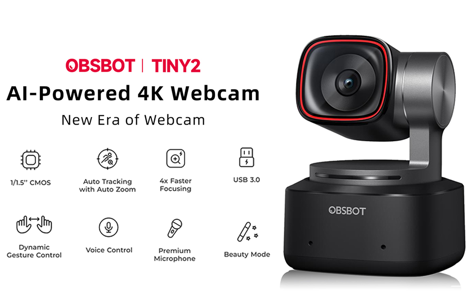
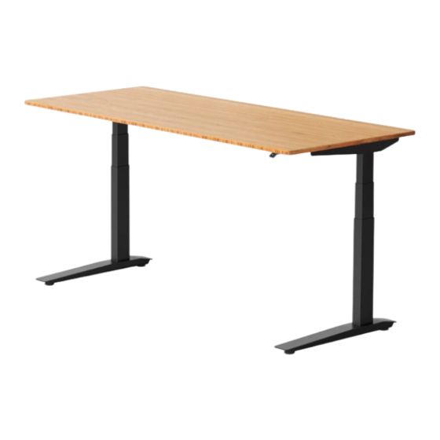
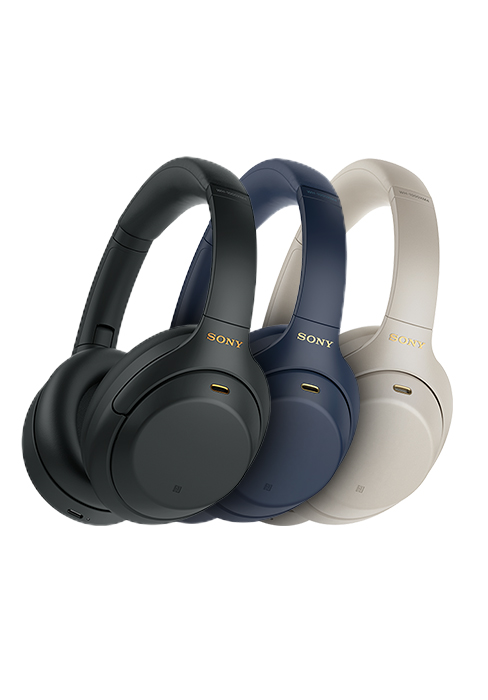
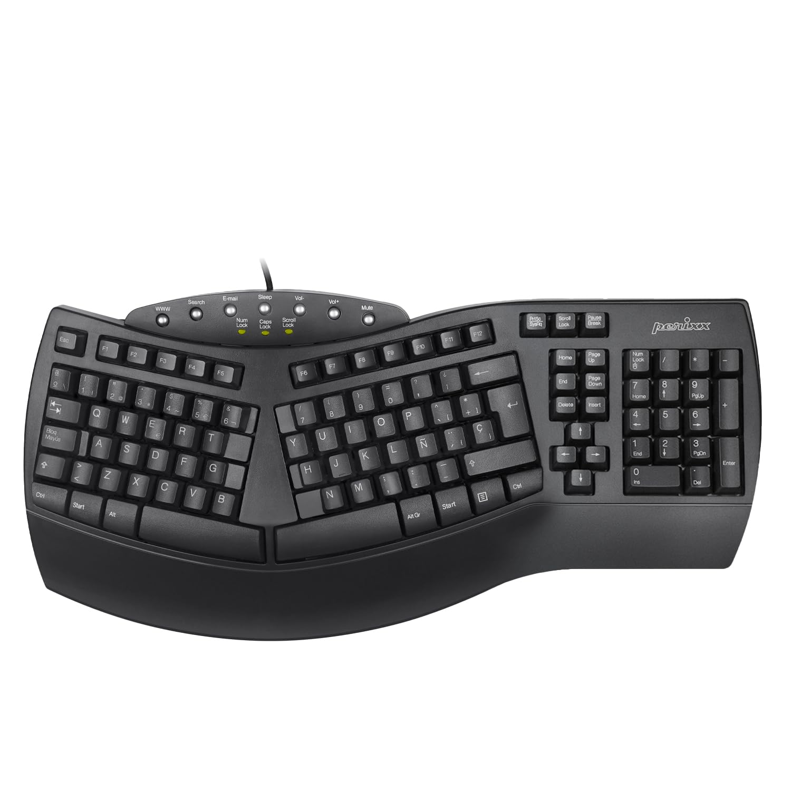

El trabajo remoto sigue siendo una tendencia global, y con ello, la necesidad de gadgets que faciliten la productividad y mejoren la experiencia laboral desde casa. A continuación, te presentamos los dispositivos más innovadores de este año:
1. Cámara web con IA - Obsbot Tiny 4K
Esta cámara web ofrece calidad 4K y cuenta con tecnología de inteligencia artificial para seguir tus movimientos durante videollamadas. Ideal para quienes necesitan una presencia profesional.
2. Escritorio ajustable - Fully Jarvis
El Fully Jarvis es un escritorio eléctrico ajustable en altura que mejora tu postura y reduce el cansancio. Perfecto para alternar entre trabajar sentado y de pie.
3. Auriculares con cancelación de ruido - Sony WH-1000XM5
Estos auriculares ofrecen una cancelación de ruido líder en el mercado, ideal para concentrarte sin distracciones, incluso en entornos ruidosos.
4. Teclado ergonómico - Logitech Ergo K860
Diseñado para reducir la tensión en las muñecas y mejorar la postura, este teclado ergonómico es una inversión para la salud a largo plazo.